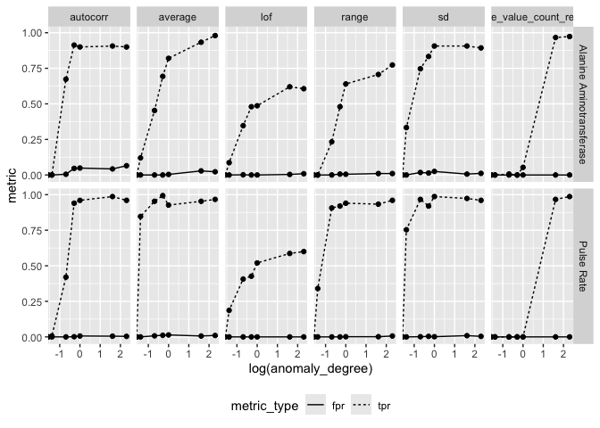
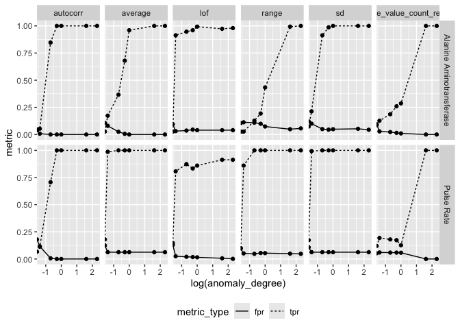

The goal of ctasval is to provide structured code to validate {ctas} performance on study data.
Installation
You can install the development version of ctasval from GitHub with:
# install.packages("devtools")
devtools::install_github("IMPALA-Consortium/ctas")
devtools::install_github("IMPALA-Consortium/ctasval")ctasval
ctasval adds three anomalous sites to the data set for each iteration and tries to detect them using {ctas}. It samples from the study site pool to first determine the number of patients and then samples a sufficient number of patients from the study patient pool.
library(pharmaversesdtm)
library(dplyr)
library(future)
library(ctasval)
library(ggplot2)
library(tidyr)
library(arrow)
set.seed(1)
df_prep <- prep_sdtm(
lb = pharmaversesdtm::lb,
vs = pharmaversesdtm::vs,
dm = pharmaversesdtm::dm,
scramble = TRUE
)
df_filt <- df_prep %>%
filter(parameter_id %in% c("Pulse Rate", "Alanine Aminotransferase")) %>%
filter(! grepl("UNSCH", timepoint_1_name) & !timepoint_1_name %in% c("AMBUL ECG REMOVAL", "RETRIEVAL"))Note: On some systems, running multiple ctasval chunks with multiprocessing in the same R session may cause hangs or memory issues. If you experience this, restart your R session between running different ctasval chunks.
plan(multisession, workers = 6)
ctas <- ctasval(
df = df_filt,
fun_anomaly = c(
anomaly_average,
anomaly_sd,
anomaly_autocorr2,
anomaly_lof,
anomaly_range,
anomaly_unique_value_count_relative
),
feats = c("average", "sd", "autocorr", "lof", "range", "unique_value_count_relative"),
parallel = TRUE,
iter = 50,
n_sites = 3,
anomaly_degree = c(0, 0.25, 0.5, 0.75, 1, 5, 10),
thresh = 1.3,
site_scoring_method = "ks"
)
arrow::write_parquet(ctas$result, "ctas_ks_result.parquet")
ctas$anomaly %>%
select(- fun_anomaly) %>%
arrow::write_parquet("ctas_ks_anomaly.parquet")Performance Metrics
ctas_result <- arrow::read_parquet("ctas_ks_result.parquet")
ctas_result %>%
tidyr::pivot_longer(c(tpr, fpr), values_to = "metric", names_to = "metric_type") %>%
ggplot(aes(log(anomaly_degree), metric)) +
geom_line(aes(linetype = metric_type)) +
geom_point() +
facet_grid(parameter_id ~ feats) +
theme(legend.position = "bottom")
Mixed Effect Scoring
plan(multisession, workers = 6)
ctas <- ctasval(
df = df_filt,
fun_anomaly = c(
anomaly_average,
anomaly_sd,
anomaly_autocorr2,
anomaly_lof,
anomaly_range,
anomaly_unique_value_count_relative
),
feats = c("average", "sd", "autocorr", "lof", "range", "unique_value_count_relative"),
parallel = TRUE,
iter = 50,
n_sites = 3,
anomaly_degree = c(0, 0.25, 0.5, 0.75, 1, 5, 10),
thresh = 1.3,
site_scoring_method = "mixedeffects"
)
arrow::write_parquet(ctas$result, "ctas_mixedeffects_result.parquet")
ctas$anomaly %>%
select(- fun_anomaly) %>%
arrow::write_parquet("ctas_mixedeffects_anomaly.parquet")
ctas_result <- arrow::read_parquet("ctas_mixedeffects_result.parquet")
ctas_result %>%
tidyr::pivot_longer(c(tpr, fpr), values_to = "metric", names_to = "metric_type") %>%
ggplot(aes(log(anomaly_degree), metric)) +
geom_line(aes(linetype = metric_type)) +
geom_point() +
facet_grid(parameter_id ~ feats) +
theme(legend.position = "bottom")
Average Box Plot Scoring
plan(multisession, workers = 6)
ctas <- ctasval(
df = df_filt,
fun_anomaly = c(
anomaly_average,
anomaly_sd,
anomaly_autocorr2,
anomaly_lof,
anomaly_range,
anomaly_unique_value_count_relative
),
feats = c("average", "sd", "autocorr", "lof", "range", "unique_value_count_relative"),
parallel = TRUE,
iter = 50,
n_sites = 3,
anomaly_degree = c(0, 0.25, 0.5, 0.75, 1, 5, 10),
site_scoring_method = "avg_feat_value"
)
arrow::write_parquet(ctas$result, "ctas_avgfeat_result.parquet")
ctas$anomaly %>%
select(- fun_anomaly) %>%
arrow::write_parquet("ctas_avgfeat_anomaly.parquet")
ctas_result <- arrow::read_parquet("ctas_avgfeat_result.parquet")
ctas_result %>%
tidyr::pivot_longer(c(tpr, fpr), values_to = "metric", names_to = "metric_type") %>%
ggplot(aes(log(anomaly_degree), metric)) +
geom_line(aes(linetype = metric_type)) +
geom_point() +
facet_grid(parameter_id ~ feats) +
theme(legend.position = "bottom")
Anamolous Sites
Anomalous Sites and their scores can be reviewed.
ctas_anomaly <- arrow::read_parquet("ctas_avgfeat_anomaly.parquet")
ctas_anomaly %>%
select(
iter,
anomaly_degree,
feats,
parameter_id,
site,
subject_id,
timepoint_rank,
result,
score
) %>%
arrange(iter, desc(anomaly_degree), parameter_id, feats, site, subject_id, timepoint_rank) %>%
head(50) %>%
knitr::kable()| iter | anomaly_degree | feats | parameter_id | site | subject_id | timepoint_rank | result | score |
|---|---|---|---|---|---|---|---|---|
| 1 | 10 | autocorr | Alanine Aminotransferase | sample_site1 | sample_site1-01-701-1440 | 1 | 21 | 1 |
| 1 | 10 | autocorr | Alanine Aminotransferase | sample_site1 | sample_site1-01-701-1440 | 4 | 228 | 1 |
| 1 | 10 | autocorr | Alanine Aminotransferase | sample_site1 | sample_site1-01-701-1440 | 5 | 2298 | 1 |
| 1 | 10 | autocorr | Alanine Aminotransferase | sample_site1 | sample_site1-01-701-1440 | 7 | 23006 | 1 |
| 1 | 10 | autocorr | Alanine Aminotransferase | sample_site1 | sample_site1-01-701-1440 | 8 | 230080 | 1 |
| 1 | 10 | autocorr | Alanine Aminotransferase | sample_site1 | sample_site1-01-701-1440 | 9 | 2300812 | 1 |
| 1 | 10 | autocorr | Alanine Aminotransferase | sample_site1 | sample_site1-01-701-1440 | 10 | 23008142 | 1 |
| 1 | 10 | autocorr | Alanine Aminotransferase | sample_site1 | sample_site1-01-701-1440 | 11 | 230081437 | 1 |
| 1 | 10 | autocorr | Alanine Aminotransferase | sample_site1 | sample_site1-01-701-1440 | 12 | 2300814388 | 1 |
| 1 | 10 | autocorr | Alanine Aminotransferase | sample_site1 | sample_site1-01-701-1440 | 13 | 23008143897 | 1 |
| 1 | 10 | autocorr | Alanine Aminotransferase | sample_site1 | sample_site1-01-704-1435 | 1 | 13 | 1 |
| 1 | 10 | autocorr | Alanine Aminotransferase | sample_site1 | sample_site1-01-704-1435 | 4 | 143 | 1 |
| 1 | 10 | autocorr | Alanine Aminotransferase | sample_site1 | sample_site1-01-704-1435 | 5 | 1444 | 1 |
| 1 | 10 | autocorr | Alanine Aminotransferase | sample_site1 | sample_site1-01-704-1435 | 7 | 14450 | 1 |
| 1 | 10 | autocorr | Alanine Aminotransferase | sample_site1 | sample_site1-01-704-1435 | 8 | 144509 | 1 |
| 1 | 10 | autocorr | Alanine Aminotransferase | sample_site1 | sample_site1-01-709-1217 | 1 | 19 | 1 |
| 1 | 10 | autocorr | Alanine Aminotransferase | sample_site1 | sample_site1-01-709-1217 | 4 | 213 | 1 |
| 1 | 10 | autocorr | Alanine Aminotransferase | sample_site1 | sample_site1-01-709-1217 | 5 | 2150 | 1 |
| 1 | 10 | autocorr | Alanine Aminotransferase | sample_site1 | sample_site1-01-709-1217 | 7 | 21514 | 1 |
| 1 | 10 | autocorr | Alanine Aminotransferase | sample_site1 | sample_site1-01-709-1217 | 8 | 215159 | 1 |
| 1 | 10 | autocorr | Alanine Aminotransferase | sample_site1 | sample_site1-01-709-1217 | 9 | 2151609 | 1 |
| 1 | 10 | autocorr | Alanine Aminotransferase | sample_site1 | sample_site1-01-709-1217 | 10 | 21516106 | 1 |
| 1 | 10 | autocorr | Alanine Aminotransferase | sample_site1 | sample_site1-01-717-1004 | 1 | 24 | 1 |
| 1 | 10 | autocorr | Alanine Aminotransferase | sample_site1 | sample_site1-01-717-1004 | 4 | 259 | 1 |
| 1 | 10 | autocorr | Alanine Aminotransferase | sample_site1 | sample_site1-01-717-1004 | 5 | 2610 | 1 |
| 1 | 10 | autocorr | Alanine Aminotransferase | sample_site1 | sample_site1-01-717-1004 | 7 | 26126 | 1 |
| 1 | 10 | autocorr | Alanine Aminotransferase | sample_site1 | sample_site1-01-717-1004 | 8 | 261277 | 1 |
| 1 | 10 | autocorr | Alanine Aminotransferase | sample_site1 | sample_site1-01-717-1004 | 9 | 2612791 | 1 |
| 1 | 10 | autocorr | Alanine Aminotransferase | sample_site1 | sample_site1-01-717-1004 | 10 | 26127931 | 1 |
| 1 | 10 | autocorr | Alanine Aminotransferase | sample_site1 | sample_site1-01-717-1004 | 11 | 261279329 | 1 |
| 1 | 10 | autocorr | Alanine Aminotransferase | sample_site1 | sample_site1-01-717-1004 | 12 | 2612793310 | 1 |
| 1 | 10 | autocorr | Alanine Aminotransferase | sample_site1 | sample_site1-01-717-1004 | 13 | 26127933116 | 1 |
| 1 | 10 | autocorr | Alanine Aminotransferase | sample_site2 | sample_site2-01-701-1023 | 1 | 23 | 1 |
| 1 | 10 | autocorr | Alanine Aminotransferase | sample_site2 | sample_site2-01-701-1023 | 4 | 260 | 1 |
| 1 | 10 | autocorr | Alanine Aminotransferase | sample_site2 | sample_site2-01-701-1023 | 5 | 2638 | 1 |
| 1 | 10 | autocorr | Alanine Aminotransferase | sample_site2 | sample_site2-01-701-1033 | 1 | 16 | 1 |
| 1 | 10 | autocorr | Alanine Aminotransferase | sample_site2 | sample_site2-01-701-1033 | 4 | 195 | 1 |
| 1 | 10 | autocorr | Alanine Aminotransferase | sample_site2 | sample_site2-01-701-1033 | 5 | 1964 | 1 |
| 1 | 10 | autocorr | Alanine Aminotransferase | sample_site2 | sample_site2-01-701-1034 | 1 | 15 | 1 |
| 1 | 10 | autocorr | Alanine Aminotransferase | sample_site2 | sample_site2-01-701-1034 | 4 | 169 | 1 |
| 1 | 10 | autocorr | Alanine Aminotransferase | sample_site2 | sample_site2-01-701-1034 | 5 | 1711 | 1 |
| 1 | 10 | autocorr | Alanine Aminotransferase | sample_site2 | sample_site2-01-701-1034 | 7 | 17125 | 1 |
| 1 | 10 | autocorr | Alanine Aminotransferase | sample_site2 | sample_site2-01-701-1034 | 8 | 171274 | 1 |
| 1 | 10 | autocorr | Alanine Aminotransferase | sample_site2 | sample_site2-01-701-1034 | 9 | 1712760 | 1 |
| 1 | 10 | autocorr | Alanine Aminotransferase | sample_site2 | sample_site2-01-701-1034 | 10 | 17127621 | 1 |
| 1 | 10 | autocorr | Alanine Aminotransferase | sample_site2 | sample_site2-01-701-1034 | 11 | 171276233 | 1 |
| 1 | 10 | autocorr | Alanine Aminotransferase | sample_site2 | sample_site2-01-701-1034 | 12 | 1712762345 | 1 |
| 1 | 10 | autocorr | Alanine Aminotransferase | sample_site2 | sample_site2-01-701-1034 | 13 | 17127623468 | 1 |
| 1 | 10 | autocorr | Alanine Aminotransferase | sample_site2 | sample_site2-01-704-1010 | 1 | 9 | 1 |
| 1 | 10 | autocorr | Alanine Aminotransferase | sample_site2 | sample_site2-01-704-1010 | 4 | 96 | 1 |
plan(sequential)Publication
these commands render publication to pub/
to edit publication edit inst/pub/ctasvalidation.qmd
quarto::quarto_render("inst/pub/ctasvalidation.qmd", output_format = "html")
quarto::quarto_render("inst/pub/ctasvalidation.qmd", output_format = "docx")
quarto::quarto_render("inst/pub/ctasvalidation.qmd", output_format = "pdf")
quarto::quarto_render("inst/pub/ctasvalidation.qmd", output_format = "latex")